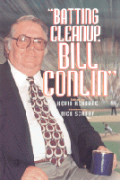

Three decades of reporting from one of the most provocative sports writers in the country
Three decades of reporting from one of the most provocative sports writers in the country


 Three decades of reporting from one of the most provocative sports writers in the country
Three decades of reporting from one of the most provocative sports writers in the country

|  |
"Batting Cleanup, Bill Conlin"edited by Kevin Kerrane, foreword by Dick Schaapcloth EAN: 978-1-56639-541-0 (ISBN: 1-56639-541-0) |
"For years, sitting next to him on The Sports Reporters, all I got from Bill Conlin was the spit of his opinions in my ear. His writing is far less messy. It's also brash, charming, intelligent, historical, and at times almost elegant. Batting Cleanup is as big as the man himself, and just as impressive."
—Mitch Albom, nationally syndicated columnist, Detroit Free Press
For over three decades Bill Conlin has anchored one of America's best sports sections: the back pages of the Philadelphia Daily News. Conlin has spent his entire career in Philadelphia, starting with the Philadelphia Bulletin, but he is probably best known for his tremendous contribution to the Philadelphia Daily News. This sassy tabloid combines sharp reporting with lively opinion writing, provocative headlines, and its irreverent voice as a self-styled "People Paper." Its sports section, in particular, bristles with what Philadelphians call "atty-tude."
"Batting Cleanup, Bill Conlin" is a collection of his best sports writing. From behind the scenes, Conlin presents athletes as all too human but his descriptions of game action convey the magnitude of the athletes' talent, and the demands of the sport itself. His writing is widely appreciated for the way it captures an intricate moment of baseball time through a series of sharp images and dynamic verbs.
In making the selections for this volume, editor Kevin Kerrane reveals how Conlin's playfulness with language and ideas led to creative nicknames —like "The Jowly Grim Giant" for Georgetown basketball coach John Thompson—and to entire stories based on outrageous premises. Who else would report a baseball game from the viewpoint of a space alien? Who else would interview God to find out what He really thinks about Randall Cunningham?
Conlin's columns deal with just about everything. Or maybe it just seems that way because he brings just about everything to bear on a topic that interests him: lessons from military history, characters from Shakespeare, personal experiences, persistent reporting, amusing one-liners, and laugh-out-loud jokes. His "King of the World" columns offer a fantasy of poetic justice in which fools and knaves are skewered, but with humor rather than heavy-handed moralizing. This humor, insight, keen intelligence, and a true love of sport has made Conlin a cult figure among sports fans. Kerrane explains such admiration this way: "It's not just because of Conlin's fierce honesty, or broad curiosity, or Irish wit, it's also because of his deep feeling for the values of sport—which baseball, in his telling, crystallizes so beautifully."
Excerpt available at www.temple.edu/tempress
"Bill Conlin should be in the baseball writers' wing of the Hall of Fame."
—Jerome Holtzman, Chicago Tribune
"Philadelphians won't boo this book. They'll buy this book, because Bill Conlin's obviously a brother the City of Brotherly Love loves."
—Mike Downey, Los Angeles Times
"Conlin is not a sportswriter. Rather, he is a talented craftsman who has chosen The World of Perspiring Arts for his text. There is a difference. If there is a Conlin cult, count me in."
—Blackie Sherrod, Dallas Morning News
Acknowledgments
Foreword – Dick Schnap
Introduction – Kevin Kerrane
1. King of the World
Some Royal Bounties •
Pardons to Ponder •
A Decree on Names
2. The Sixties
A Bad Day for Conservatives •
Banks Near Death After Arena Kayo •
Hayward Rants, Raves After Arena Victory •
Phillies Enter No-Man's Land •
Fear and Fatigue •
Forgetting How •
Cheers for New Champs •
Now We All Must Believe •
Detoured from Greatness
3. Gallery
Hamlet in Pinstripes •
Poor Old Hughie •
Shadows of the Game •
Height of Concern •
One Slump Pete Won't Snap •
He Made a Difference •
He Crossed That Bridge •
The Sphinx of the Schuylkill •
A Higher Perspective •
Remembering Mickey •
Last of the True Dodgers •
Double X
4. The Seventies
A Shadow, Finally Sliding to Rest •
The Night Fans Tore the Park Apart •
K's and O's •
Red Eyes and Black Eyes •
Fisk Gives Red Sox Another Shot •
A Selection of Ozarkisms •
The Mouse That Roared •
The Ten-Minute Collapse •
The Moon Is Blue •
Homer Ends Odyssey, 23-22 •
The Ghost of Clemente
5. Hell's Team
6. The Eighties
Dealt for Peanuts •
An Obscene Loss •
The Catch •
Corrales Out of the Lineup •
Morgan's Bat Comes of Age •
Report from Earth •
A Postcard from Spring Training •
Sincere Appreciation •
Soul on Ice •
Spinks Blinks •
Making Money the Old-Fashioned Way •
Gibson Writers New Chapter in Series Lore •
'It's an Earthquake'
7. Thumbs Down
Mooning Miami •
Ross Perot's Dumber Brother •
Schottzie 02 Could Run Reds Better •
The Tonya Chronicles •
A New York State of Mind •
Now We've Seen the Real Rollie •
Home of the Boobirds •
Stereophonic Boredom
8. The Nineties
No More Tears •
When Monica Met Steffi •
Yo, Fidel, You're in my Seat! •
Ear Whacks •
Classic Hurler Caps Classic Series •
Heartbreak and Class Counsel Phils Keep Chins Clean for Top Doc •
In a Remote Sense, I Can Be Like Mike •
Watching Mitch Is Sheer Torture •
One-Armed Man Was Giant-Killer •
Lousy Judging Comes in Paris •
Warriors Recapture the Magic •
My Son, the Replacement •
A Little Hot Under the Facemasks
9. Loving the Game
The Not-So-Lost Art of Cheating •
Pitching and Moaning •
What's It Called Again, Mr. Ashburn? •
John Kruck's Top 10 List •
Popping the Cork •
An X-Rated Baseball Documentary •
Ripken Is What Baseball, America Were •
In a Dream World, by Dick Young (as told to Bill Conlin)
Kevin Kerrane is Professor of English at the University of Delaware, Newark.
Baseball in America, edited by Rich Westcott.
© 2015 Temple University. All Rights Reserved. This page: http://www.temple.edu/tempress/titles/1319_reg.html.